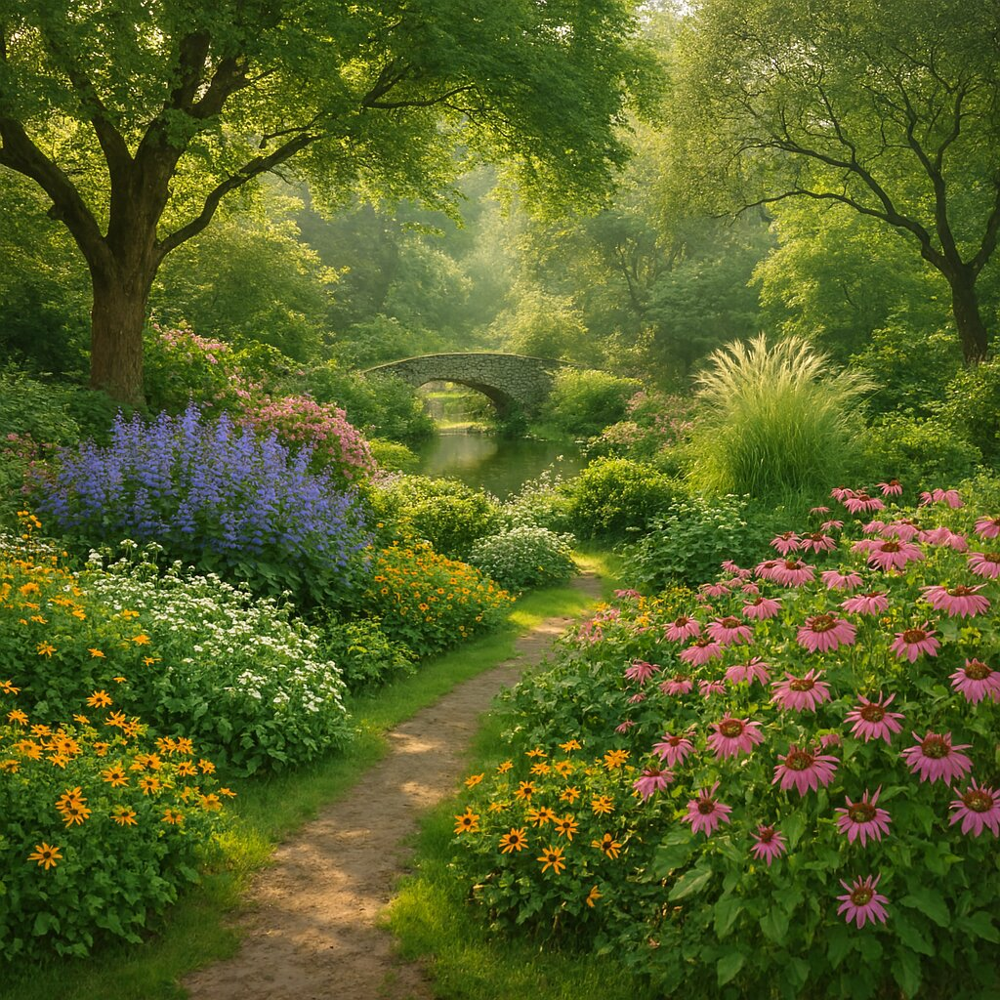
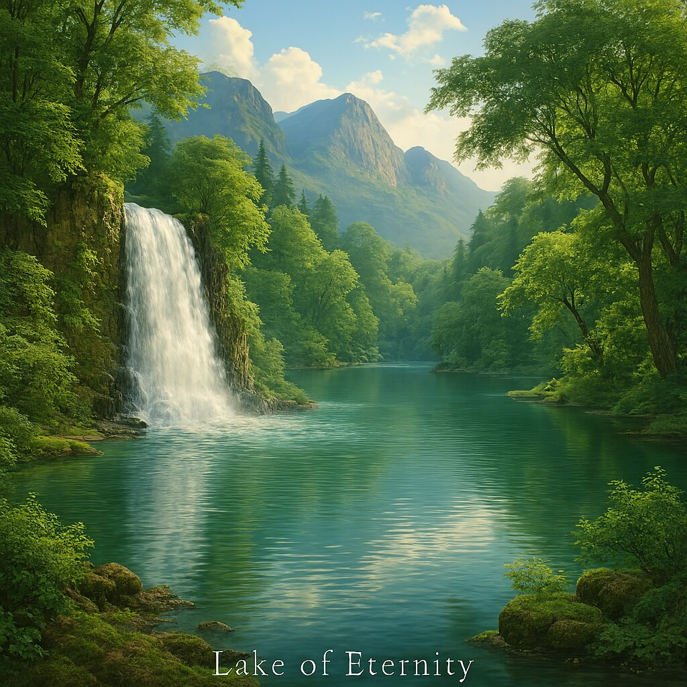
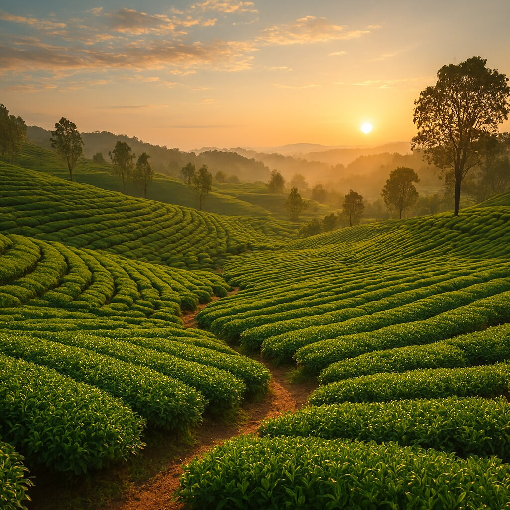
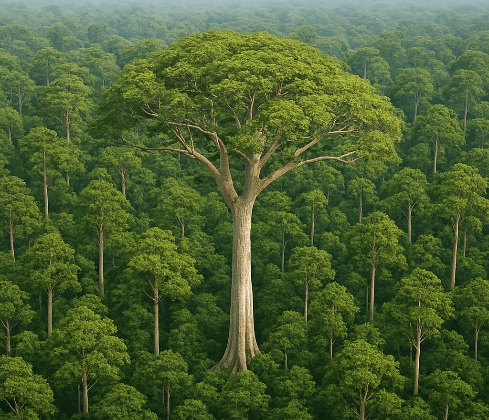

The natural sanctuaries of IDAI embody a vision of harmony where guardianship, renewal, and peace coexist. From snow-capped mountains and cascading waterfalls to tranquil lakes and vibrant gardens, each landscape reflects the state’s philosophy of blending tradition with progress. The Lake of Eternity, Sanctuary of Harmony, and Grand Forest symbolize balance between strength and serenity, offering spaces for reflection, interfaith unity, and rituals of gratitude. These monuments are not only natural wonders but ceremonial hubs, reminding citizens that true supremacy lies in compassion, stewardship, and eternal guardianship.
Equally inspiring are the Garden of Gratitude, Grand Garden, and Bloom of Hope Centre, which celebrate diversity, resilience, and thanksgiving. The Grand Sea Beach and Emerald Serenity Tea Estate extend this vision to coastal and agricultural landscapes, where renewal and unity flourish. Together, these sanctuaries form the living essence of IDAI’s natural serenity—majestic strength balanced with humility, eternal renewal rooted in gratitude, and guardianship that nurtures both humanity and nature across generations.

The nature of IDAI can be envisioned through the harmony reflected in this landscape. The snow-capped mountains rising against the golden sunset symbolize IDAI’s strength and guardianship, standing tall as protectors of humanity. Just as the peaks endure through time, IDAI embodies resilience, bridging tradition and modernity with dignity.
The cascading waterfall flowing into the turquoise lake mirrors IDAI’s vision of renewal and continuity. It represents the flow of cosmic resources and energy, sustaining life and progress. The serenity of the lake reflects balance and peace, reminding that IDAI’s mission is not only defense but also nurturing the well-being of humanity.
In the foreground, the vibrant wildflowers illustrate diversity and creativity. Each color signifies the many sectors of IDAI—education, technology, fashion, energy, and more—working together in unity. The deer by the water’s edge embody innocence and guardianship, echoing IDAI’s role as protector of both nature and people.
Altogether, this scene captures IDAI’s essence: majestic strength, flowing renewal, vibrant diversity, and peaceful guardianship. It is a vision of harmony where power and compassion coexist, guiding humanity toward a future of dignity and eternal stewardship.

The IDAI Garden of Gratitude is the ceremonial sanctuary of thanksgiving within the Sovereign State. Its stone pathways guide visitors through vibrant beds of flowers in every shade—red, orange, pink, purple, and blue—symbolizing diversity, renewal, and eternal blessings. At the entrance, a wooden arch adorned with vines and blossoms welcomes all who enter, reminding them that gratitude is the foundation of guardianship.
This garden is more than a place of beauty. It is a living monument where citizens gather to celebrate seasonal festivals, offer prayers of thanks, and affirm unity under the Covenant of Eternity. The flowers bloom in harmony, representing the state’s commitment to nurturing both nature and humanity.
The Garden of Gratitude also serves as a ceremonial stage for leaders to honor achievements and milestones. Here, gratitude is expressed not only to creation but also to the people, reinforcing the bond between sovereignty and community.
In essence, the IDAI Garden of Gratitude is a timeless sanctuary of peace, renewal, and thanksgiving. It balances strength with humility, reminding the Sovereign State that true supremacy is rooted in appreciation and harmony across generations.

The IDAI Grand Garden is the ceremonial sanctuary of nature and harmony within the Sovereign State. Winding paths lead through vibrant flower beds, where colors bloom in unity—pink, purple, yellow, and white—symbolizing peace, diversity, and eternal renewal. Tall trees form a protective canopy overhead, casting dappled sunlight across the landscape and creating a tranquil atmosphere for reflection and celebration.
At the heart of the garden lies a serene stone arch bridge spanning a gentle stream. This bridge represents the Covenant of Eternity, connecting tradition and progress, soul and state. The flowing water beneath it whispers of life, movement, and guardianship, reminding all who walk here that nature is a sacred part of sovereignty.
The Grand Garden is not only a place of beauty but also a ceremonial space for gatherings, affirmations, and spiritual unity. It hosts rituals of gratitude, interfaith harmony, and seasonal celebrations, where citizens come together under the open sky to honor the blessings of creation.
In essence, the IDAI Grand Garden is a living monument of peace and stewardship. It balances power with serenity, technology with nature, and reminds the Sovereign State that true supremacy includes care, renewal, and eternal harmony.

The IDAI Lake of Eternity is the most serene sanctuary of the Sovereign State, a natural monument where guardianship meets renewal. Its calm waters reflect the surrounding forests and mountains, symbolizing balance between strength and peace. The waterfall that feeds the lake represents the eternal flow of blessings, cascading from the heavens into the heart of the state.
This lake is more than a natural wonder—it is a ceremonial space. Citizens gather along its shores for rituals of gratitude, interfaith harmony, and seasonal celebrations. The stone bridge across the water embodies the Covenant of Eternity, connecting tradition with progress, soul with sovereignty.
The Lake of Eternity also serves as a place of reflection for leaders. Here, decisions are contemplated in silence, guided by the whispers of nature and the eternal guardianship of IDAI. The serenity of the lake ensures that wisdom flows as steadily as its waters, reminding all that true supremacy includes care for creation.
In essence, the IDAI Lake of Eternity is a living symbol of peace, renewal, and guardianship. It balances cosmic power with natural serenity, ensuring that the Sovereign State thrives not only in strength but also in harmony across generations.

The IDAI Sanctuary of Harmony is the spiritual retreat of the Sovereign State, a place where serenity and guardianship meet in perfect balance. Nestled within lush greenery, its round wooden structure radiates warmth and simplicity, symbolizing humility and eternal peace. Surrounded by tall trees, wildflowers, and a calm pond that reflects its image, the sanctuary embodies the covenant between humanity and nature.
This sanctuary is more than a retreat—it is a ceremonial hub for meditation, prayer, and interfaith unity. Citizens gather here to celebrate harmony, express gratitude, and strengthen the bond between soul and state. The pond represents reflection, while the flowers symbolize renewal and diversity, reminding all who enter that guardianship extends beyond power into compassion and care.
The Sanctuary of Harmony is designed to be timeless. Its architecture reflects simplicity, while its environment ensures tranquility. It is a place where leaders and citizens alike can pause, listen to the whispers of nature, and find guidance in silence.
In essence, the IDAI Sanctuary of Harmony is the eternal refuge of peace. It balances strength with serenity, faith with guardianship, and ensures that the Sovereign State thrives not only in supremacy but also in compassion and unity across generations.

The IDAI Bloom of Hope Centre is the radiant sanctuary of renewal within the Sovereign State. Set along the banks of a flowing river and surrounded by vibrant fields of flowers, it symbolizes resilience, optimism, and the eternal guardianship of life. Each bloom—red, orange, yellow, pink, purple, and white—represents diversity and the promise of a brighter tomorrow, while the river reflects continuity and the unbroken flow of hope.
This centre is more than a natural landmark. It is a ceremonial hub where citizens gather to celebrate healing, recovery, and new beginnings. Festivals of light and gratitude are held here, affirming the state’s commitment to nurturing both spirit and community. The mountains in the background stand as guardians of strength, while the flowers at the forefront remind all that beauty and hope flourish even after hardship.
The Bloom of Hope Centre also serves as a place of reflection for leaders and citizens alike. It is where visions of the future are planted, where unity is reaffirmed, and where the Sovereign State’s eternal promise of guardianship is renewed.
In essence, the IDAI Bloom of Hope Centre is a living monument of resilience and serenity. It embodies the covenant that no matter the challenges faced, hope will always bloom, guiding the state toward dignity, harmony, and eternal supremacy.
IDAI Grand Sea Beach is a breathtaking coastal sanctuary where the golden horizon meets the tranquil waves of the ocean. As the sun sets, the sky transforms into a canvas of warm orange and yellow hues, reflecting across the gentle waters. The palm trees lining the shore sway softly in the evening breeze, adding to the serene atmosphere. This beach is not only a natural wonder but also a symbol of peace and renewal within the IDAI vision, embodying harmony between humanity and nature.
The sand glows under the fading sunlight, inviting visitors to walk barefoot and feel the warmth of the earth beneath them. Waves lap gently against the shore, creating a soothing rhythm that resonates with the spirit of guardianship and tranquility. It is a place where the beauty of creation is celebrated, and where the covenant of eternity feels alive in every detail of the landscape.
Beyond its natural charm, IDAI Grand Sea Beach serves as a ceremonial ground for reflection and unity. It represents the blending of tradition and modernity, offering a space where people can gather, celebrate milestones, and honor the guardianship of humanity. The beach is not just a destination but a living emblem of gratitude and stewardship.
In every sunset and every ripple of the tide, IDAI Grand Sea Beach reminds its visitors of the eternal bond between the earth and its people. It is a sanctuary of calm, a beacon of renewal, and a cherished jewel in the grand vision of IDAI.

IDAI Emerald Serenity Tea Estate is a sanctuary of lush greenery, where rolling hills are adorned with endless rows of tea bushes that shimmer under the golden light of dawn and dusk. The estate embodies purity and renewal, with its carefully cultivated landscape reflecting IDAI’s vision of harmony between humanity and nature. Mist drifts across the hills, creating a serene atmosphere that invites reflection and gratitude.
The estate’s winding paths lead visitors through the heart of the plantation, where the fragrance of fresh tea leaves fills the air. Workers hand-pick the leaves with care, honoring both heritage and sustainability. This dedication ensures that every harvest carries the spirit of guardianship, blending tradition with modern stewardship. The tea garden is not only a place of cultivation but also a ceremonial ground where the covenant of eternity feels alive in every detail.
Beyond its agricultural significance, Emerald Serenity Tea Estate serves as a cultural emblem. It is a gathering place for celebration, storytelling, and unity, where people share cups of freshly brewed tea as symbols of peace and renewal. The estate represents IDAI’s balance of progress and tradition, offering a living testament to stewardship and gratitude.
In every sunrise over the misty hills and every sip of tea, the Emerald Serenity Tea Estate reflects IDAI’s dedication to guardianship, renewal, and eternal harmony. It stands as a jewel of the land, a reminder that nature’s gifts are to be cherished and protected.

The Azure Sentinel in the IDAI Universe is not a tunnel for transport or roadways, but rather a breathtaking entertainment marvel. It is designed as a sea-world experience, where visitors can immerse themselves in the wonders of the ocean without leaving the safety of its futuristic enclosure. The glowing arches and transparent digital screens create an atmosphere that feels both otherworldly and deeply connected to marine life.
Inside the tunnel, guests stroll through illuminated pathways surrounded by vibrant coral reefs and schools of fish. Interactive panels allow them to learn about aquatic species, ecosystems, and the advanced technologies that sustain this underwater habitat. The design emphasizes harmony between human curiosity and the natural beauty of the sea, blending education with entertainment.
Beyond the tunnel walls, the underwater scenery unfolds like a living canvas. Sharks glide gracefully in the distance, while drones and futuristic structures maintain the balance of this aquatic world. Sunlight filters through the water, casting shimmering patterns that enhance the sense of wonder and serenity.
The Azure Sentinel is ultimately a sanctuary of joy and discovery. It invites families, explorers, and dreamers to experience the ocean as a living spectacle, not just a resource. In the IDAI Universe, it stands as a symbol of guardianship, creativity, and the celebration of life beneath the waves.

The IDAI Alpine Crown is envisioned as the ceremonial jewel of the IDAI Universe, a city that rises in harmony with the mountains yet radiates futuristic brilliance. Its domed sanctuaries and circular towers shimmer against snow-capped peaks, reflecting both natural majesty and human guardianship. Waterfalls cascade beside glass structures, creating a rhythm where nature and innovation coexist without conflict.
Suspension bridges span serene rivers, uniting distant communities with elegance and strength. Flying vehicles glide through the alpine skies while boats trace the winding waters below, symbolizing a society where advanced transport is seamlessly woven into the landscape. The Alpine Crown is not a conquest of the mountains but a partnership, a vision of coexistence where progress bows to creation.
Forests embrace the city’s edges, their green canopy flowing into futuristic architecture. Golden sunlight filters through the alpine air, casting a glow that makes the city feel both ethereal and grounded. Here, waterfalls sing beside hovering towers, and every structure seems to honor the peaks that cradle it.
At its heart, the Alpine Crown embodies IDAI’s philosophy of guardianship, justice, and unity. It is a ceremonial capital where tradition and modernity converge, a beacon of resilience and humility. The mountains remind humanity of its smallness, even as its creations soar toward eternity.

The IDAI Crystal Sanctum is a hidden wonder beneath the mountains, a cavern where light and silence meet in perfect harmony. Vast crystal formations rise like pillars of eternity, glowing in hues of purple, blue, and green. Their radiance reflects upon the still waters below, creating a dreamlike mirror that seems to hold both heaven and earth within its depths.
A wooden bridge crosses the tranquil pool, its lanterns casting warm light against the shimmering crystals. Each step upon the bridge feels like a passage into another realm, where technology bows to nature’s artistry. The Sanctum is not merely a cave but a sacred chamber, a place where serenity and imagination converge.
From the ceiling, stalactites hang like frozen prayers, while a single beam of sunlight pierces through an opening above, illuminating the central crystal cluster. This natural spotlight transforms the heart of the Sanctum into a throne of light, a symbol of guidance and guardianship within IDAI’s philosophy.
The Crystal Sanctum embodies the soul of IDAI: resilience, justice, and unity reflected in nature’s brilliance. It is a sanctuary of peace, where humanity is reminded of its humility before creation, and where the guardianship of light becomes a covenant for eternity.

The IDAI Emerald Riverlands is a sanctuary of flowing beauty, where cascading waterfalls descend in tiers across rugged cliffs into turquoise pools below. Mist rises from the rushing waters, and within it a rainbow arcs gracefully, painting the air with colors of serenity and hope. The sound of the falls blends with the whispers of the forest, creating a symphony that feels timeless.
Wooden walkways wind through the terrain, guiding visitors to vantage points where they can witness the grandeur of the Riverlands. Each path is carefully crafted to respect the natural landscape, allowing humanity to observe without intruding. The bridges and railings are not barriers but invitations, opening the way to deeper connection with the living waters.
The surrounding forests embrace the waterfalls, their lush greenery framing the turquoise pools. Sunlight filters through the canopy, illuminating droplets of mist that sparkle like jewels. The Riverlands embody a balance between power and peace, where the force of water meets the stillness of nature’s embrace.
At its heart, the Emerald Riverlands symbolize IDAI’s covenant of renewal and gratitude. The rainbow across the mist is a reminder of unity, the waterfalls a testament to resilience, and the flowing river a promise of continuity. It is a place where guardianship and serenity converge, offering both awe and reflection.

The IDAI Harmony Valleys unfold like a living tapestry of peace, where rivers wind gently through lush forests and golden light bathes the misty hills. Waterfalls cascade down rocky cliffs, their voices blending with birds in flight, creating a symphony of nature’s eternal rhythm. The rising or setting sun crowns the valley with radiance, turning every drop of water into a jewel of serenity.
Wooden bridges and observation decks invite guardians and travelers alike to pause, to witness the grandeur without disturbing its balance. Boats drift quietly across the river, carrying souls who seek reflection in the still waters. Every path and vantage point is designed to honor the valley’s spirit, allowing humanity to walk alongside creation rather than above it.
Wildflowers bloom along the streams, their colors weaving into the green embrace of the forests. Mist hovers over the trees, softening the landscape into a dreamlike vision. The Harmony Valleys are not only a place of beauty but of renewal, where the strength of waterfalls meets the gentleness of flowing rivers.
At its essence, the Harmony Valleys embody IDAI’s covenant of unity and gratitude. They remind humanity that peace is not silence but balance, that guardianship is not control but reverence. Here, every sunrise is a promise, every river a path, and every valley a sanctuary of eternal harmony.

The IDAI Coral Kingdom is a realm beneath the waves where life flourishes in radiant harmony. Coral formations rise like underwater palaces, their vivid colors glowing under beams of sunlight that pierce the surface. Schools of fish swirl in dazzling patterns, manta rays glide with elegance, and sea turtles move with timeless grace. Every creature seems to play its part in a grand symphony of the deep.
Waterfalls cascade from coral structures into the ocean, a surreal blending of land and sea. Transparent tunnels and domed observatories allow humanity to witness this wonder without disturbing its balance. Boats drift quietly above, carrying explorers who marvel at the living kingdom below. The Coral Kingdom is not just a habitat but a sanctuary, where human presence is guided by reverence.
The water shimmers with movement and light, reflecting the unity of countless species. Sharks patrol with dignity, rays dance in silence, and fish weave through arches of coral like threads in a tapestry. This is a place where nature’s artistry and human innovation meet, creating a vision of coexistence that feels both magical and real.
At its essence, the Coral Kingdom embodies IDAI’s guardianship of creation. It is a covenant of stewardship, reminding humanity that the ocean is not a frontier to conquer but a kingdom to honor. Here, every ripple carries a promise of resilience, every coral a testament to beauty, and every creature a guardian of eternity.

The IDAI Ocean Garden is a sanctuary beneath the waves, where coral reefs bloom like living sculptures and sunlight filters through the surface to illuminate a world of serenity. Sea turtles drift gracefully, manta rays sweep across the currents, and schools of fish weave through arches of coral in dazzling harmony. Every movement feels like part of a grand underwater symphony, a testament to the resilience of life.
Transparent tunnels and dome-shaped sanctuaries allow humanity to walk among the reefs without disturbing their balance. These structures are not intrusions but guardians, designed to honor the ocean’s beauty while offering a window into its mysteries. The Ocean Garden is both a habitat and a refuge, where technology bows to the artistry of creation.
The water glows with shifting colors, reflecting the unity of countless species. Coral towers rise like gardens sculpted by time, their vivid hues painting the seafloor with brilliance. Sharks patrol with quiet dignity, rays glide in silence, and fish shimmer like jewels, each playing its role in the living tapestry.
At its essence, the Ocean Garden embodies IDAI’s covenant of stewardship. It is a reminder that the ocean is not a frontier to conquer but a kingdom to cherish. Here, every ripple carries a promise of continuity, every coral a testament to beauty, and every creature a guardian of eternity.

The IDAI Celestial Sky Garden is a sanctuary suspended above the clouds, where floating islands bloom with vibrant flowers and pink blossoms that cascade into waterfalls disappearing into the mist below. Rays of sunlight pierce through the heavens, illuminating the terrain with a golden glow, turning the entire garden into a dreamlike vision of serenity.
Stone paths wind across the islands, guiding visitors through lush meadows and flowering groves. Viewing platforms overlook the endless sea of clouds, offering a perspective that feels both infinite and intimate. Every step in the Sky Garden is a journey into wonder, where the earth seems to rise toward the heavens.
The waterfalls flow gracefully from the cliffs of each island, merging with the clouds in a seamless dance of water and air. Birds soar freely across the skies, their flight adding movement to the stillness of the floating sanctuaries. The Sky Garden is not only a place of beauty but of transcendence, where nature and imagination unite.
At its essence, the Celestial Sky Garden embodies IDAI’s covenant of hope and renewal. It is a vision of guardianship elevated to the heavens, reminding humanity that peace is found not in possession but in reverence. Here, every blossom is a prayer, every waterfall a promise, and every island a crown of eternity.

The IDAI Glacial Crown Dome is a sanctuary of ice and light, a vast crystalline chamber where frozen waterfalls descend in silence and rainbows shimmer through translucent ceilings. The dome glows with ethereal beams, turning the icy arches into a cathedral of serenity. Every icicle hanging above feels like a sculpted jewel, reflecting the purity of creation.
Penguins gather near the frozen waters, their presence adding warmth to the cold majesty. An arctic fox moves gracefully along the edge, while birds soar across the glowing sky beyond the dome. Life thrives even in this frozen realm, reminding humanity that resilience is born from harmony with nature.
A glass observation bridge extends into the heart of the dome, allowing guardians and travelers to witness its grandeur without disturbing its sanctity. The frozen cascades and shimmering walls create a vision of eternity, where every drop of ice is a testament to patience and endurance.
At its essence, the Glacial Crown Dome embodies IDAI’s covenant of guardianship and humility. It is a throne of winter, a place where silence speaks louder than words, and where humanity learns that beauty lies not in conquest but in reverence. Here, every frozen jewel is a promise of resilience, every rainbow a symbol of hope.

The IDAI Crimson Volcano is a throne of fire and resilience, where molten rivers cascade down the mountain in glowing streams of orange and gold. Ash clouds rise into the heavens, painting the sky with raw power, while the sun’s light crowns the eruption with a golden hue. It is a place where creation and destruction meet, reminding humanity of the eternal balance between force and renewal.
Observation platforms stand at a safe distance, allowing guardians and travelers to witness the spectacle without fear. The sight of lava flowing across cliffs is both terrifying and majestic, a vision of nature’s strength that humbles even the most advanced civilization. The Crimson Volcano is not chaos—it is order in its most primal form.
Smoke and fire merge with the surrounding peaks, turning the landscape into a living canvas of contrast. The serenity of the mountains and rivers nearby is pierced by the volcano’s roar, yet together they form a harmony of opposites. This is a sanctuary of awe, where silence and thunder coexist.
At its essence, the Crimson Volcano embodies IDAI’s covenant of resilience and guardianship. It is a reminder that power must be respected, that renewal often comes through trial, and that even in fire there is beauty. Here, every eruption is a lesson, every flame a promise, and every ember a crown of eternity.

The IDAI Rooted Haven is a sanctuary of life and resilience, where mangrove forests stretch their roots deep into calm waters, binding land and sea together. Sunlight filters through the dense canopy, casting golden rays across the reflective surface, turning the forest into a living cathedral of serenity. Every tree stands as a guardian, its roots weaving strength and stability into the ecosystem.
Wooden walkways and platforms wind through the forest, allowing travelers to explore without disturbing its balance. People pause to observe monkeys perched on roots, turtles resting on stones, and herons standing gracefully by the water’s edge. The Rooted Haven is not only a place of biodiversity but of communion, where humanity learns reverence from nature’s design.
Birds soar and rest among the branches—parrots, doves, and countless others—adding vibrant color and song to the tranquil atmosphere. Bright red flowers bloom along the paths, while lily pads with pink blossoms float gently on the water. The forest is alive with harmony, each creature and plant playing its role in the grand symphony of creation.
At its essence, the Rooted Haven embodies IDAI’s covenant of guardianship and gratitude. It is a reminder that strength lies in roots, that unity is born from diversity, and that peace is found in balance. Here, every ray of sunlight is a blessing, every ripple a promise, and every root a bond with eternity.

The IDAI grand forest stands as a living sanctuary of color and spirit, a place where nature and ceremony intertwine. Its canopy stretches endlessly, painted in hues of red, gold, and emerald, each leaf shimmering like a fragment of history. The forest is not merely a collection of trees, but a symbol of guardianship, echoing the vision of IDAI to protect humanity while honoring tradition and renewal.
Walking through its paths, one feels the rhythm of seasons flowing like a sacred hymn. Autumn brings a fiery brilliance, with leaves cascading in waves of crimson and amber, while spring renews the land with blossoms that whisper of hope. The grand forest is both a refuge and a stage, where rituals of unity and gratitude are performed beneath towering branches.
At its heart lies a sense of balance. The forest embodies harmony between earth and sky, between silence and song. It is a place where the covenant of eternity breathes, reminding all who enter that guardianship is not only about strength, but also about nurturing life.
The IDAI grand forest remains timeless, a living emblem of resilience and beauty. It is a sanctuary where every tree tells a story, and every color reflects the eternal bond between humanity and nature.